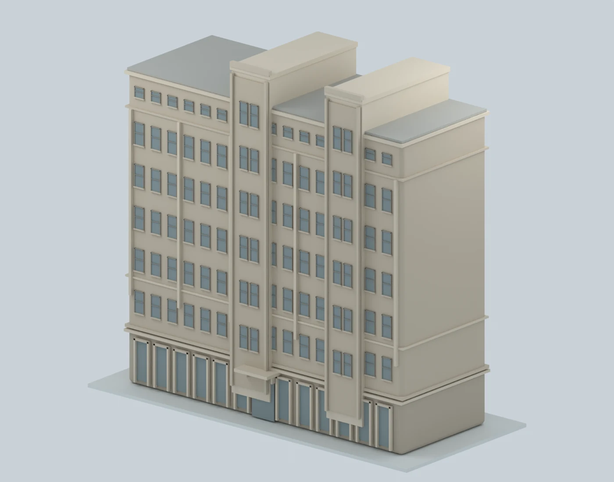

Huellas del Patrimonio

Encuentra los buzones y reúne las once postales de tu cuaderno de viaje.
Tu cuaderno de viaje
Cada calle guarda una historia. Elige tu perfil o inicia una nueva colección.
← Volver a la exposición
Encuentra los buzones y reúne las once postales de tu cuaderno de viaje.
Cada calle guarda una historia. Elige tu perfil o inicia una nueva colección.
← Volver a la exposición